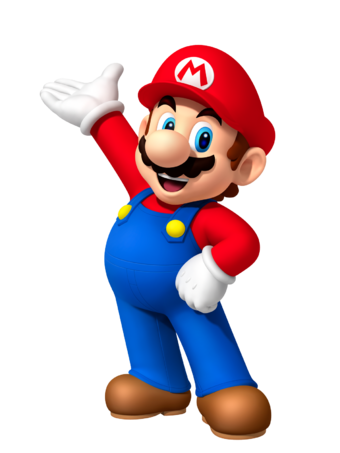
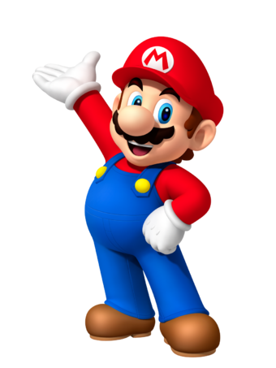

Super Mario
est une série de
jeux
vidéo de plates-formes créée par Nintendo et mettant en scène sa mascotte Mario ainsi que, dans beaucoup de jeux, son frère Luigi. Il s'agit de la première série de la franchise Mario. Au moins un jeu Super Mario est sorti sur chaque console majeure de Nintendo depuis le premier épisode, Super Mario Bros., sorti en 1985 sur Nintendo Entertainment System.
Les jeux Super Mario mettent en scène les aventures de Mario dans le Royaume Champignon. Mario progresse dans des niveaux variés dans lesquels il saute pour battre des ennemis. Le jeu met généralement en scène des intrigues simples ; la plus commune étant que Bowser, le principal ennemi, kidnappe la Princesse Peach, que Mario doit ensuite sauver. Super Mario Bros. a établi beaucoup de concepts et d'éléments de gameplay qui apparaissent dans presque chaque jeu de la série, incluant une multitude de power-ups qui donnent à Mario des capacités spéciales, par exemple celle de lancer des boules de feu, ou d'autres choses.
Les jeux Super Mario ont été vendus à plus de 310 millions d'exemplaires dans le monde jusqu'en septembre 2015, ce qui en fait la série de jeux vidéo la plus vendue de tous les temps.
 

Le Super champignon est le power-up le plus présent de la série. C'est un champignon rouge avec des taches blanches. Quand Mario en prend un, il augmente de taille et peut alors casser certains blocs. Il redevient petit quand il est touché par un ennemi5. Quand Mario est grand, la plupart des blocs qui donnent habituellement un Super champignon offrent à la place un power-up plus puissant comme la Fleur de feu, la fleur de glace, la feuille tanooki, etc.
Shigeru Miyamoto déclare dans une interview que le Super champignon a été créé par hasard, après un test en bêta de Super Mario Bros. qui a montré que Mario était trop grand. Ils ont donc ajouté des champignons pour que Mario grandisse et rapetisse6. Les avancées technologiques actuelles permettent maintenant d'avoir un grand Mario, mais plus tard, le power-up a été introduit pour le rendre « super » seulement comme effet en bonus7.
Le Champignon poison apparaît pour la première fois dans Super Mario Bros.: The Lost Levels. Contrairement au Super champignon, il cause des dommages à Mario similaires à l'attaque d'un ennemi. Il est représenté comme un champignon violet avec une tête de mort qui fronce les sourcils. Il apparaît aussi dans Super Mario 3D Land, où il a la capacité supplémentaire de poursuivre Mario et Luigi.


{kind=link}